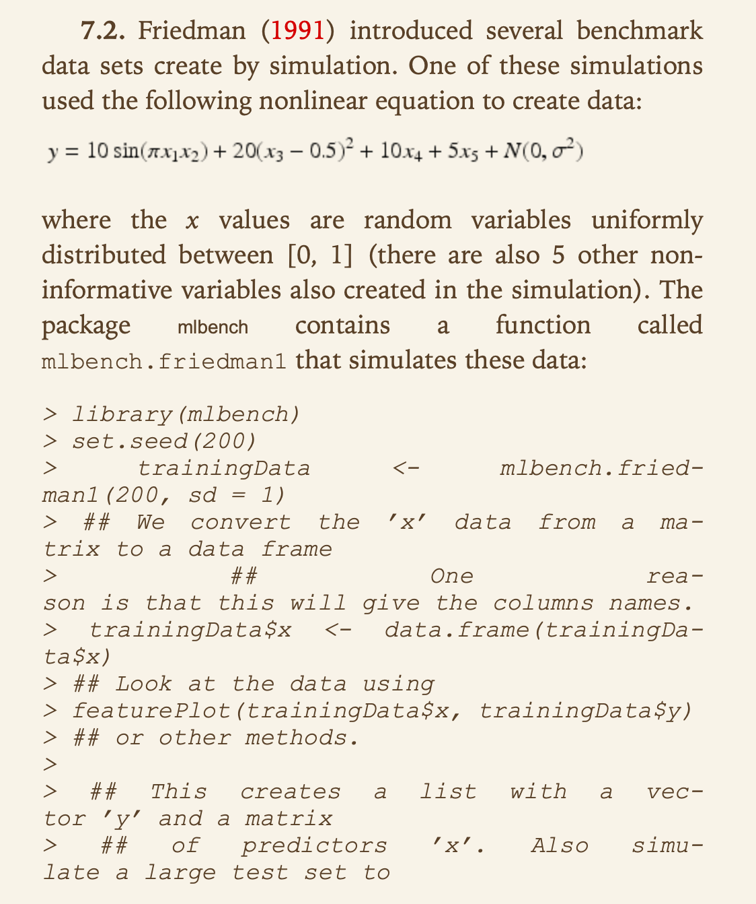
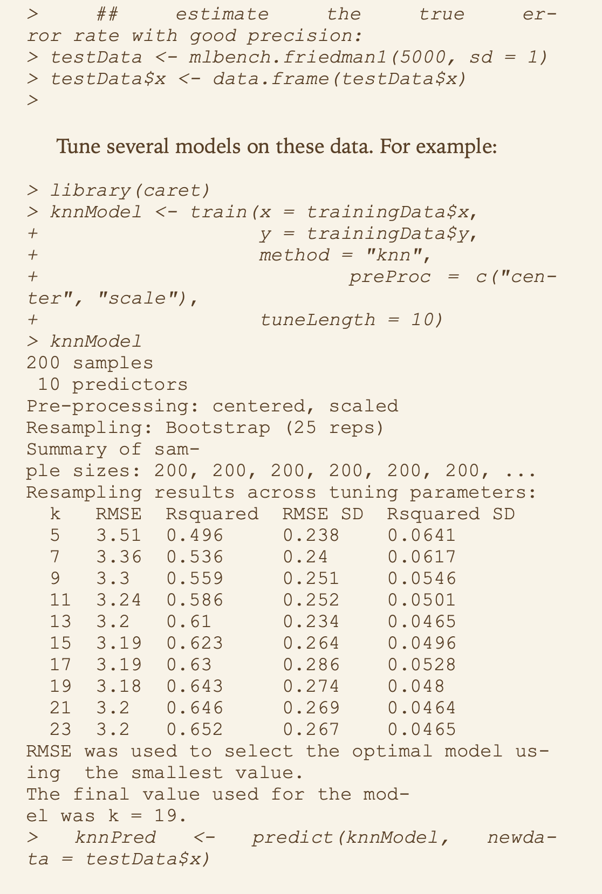
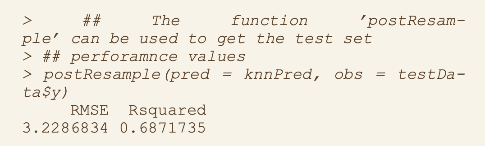
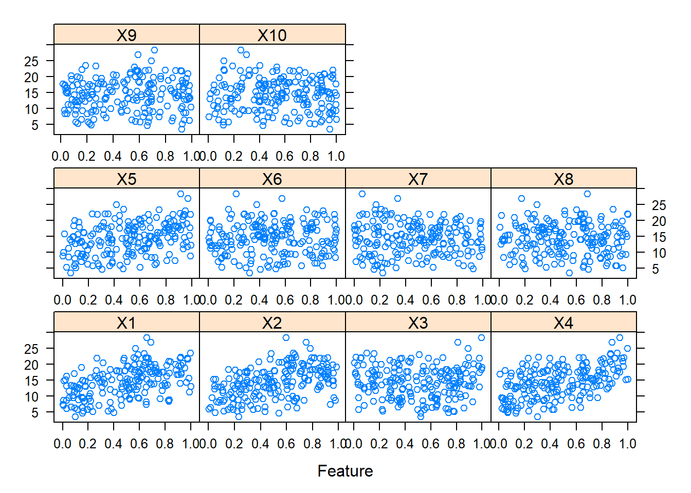

Chapter 3 KJ7
3.1 7.2



Set up training data.
trainingData <- mlbench.friedman1(200, sd = 1)Format training data.
trainingData$x <- data.frame(trainingData$x)Plot training data predictors vs. outcome.
featurePlot(trainingData$x,trainingData$y)
Looks like the first five predictors have a better correlation with the outcome than the last five.
Set up and format test data.
testData <- mlbench.friedman1(5000, sd = 1)
testData$x <- data.frame(testData$x)